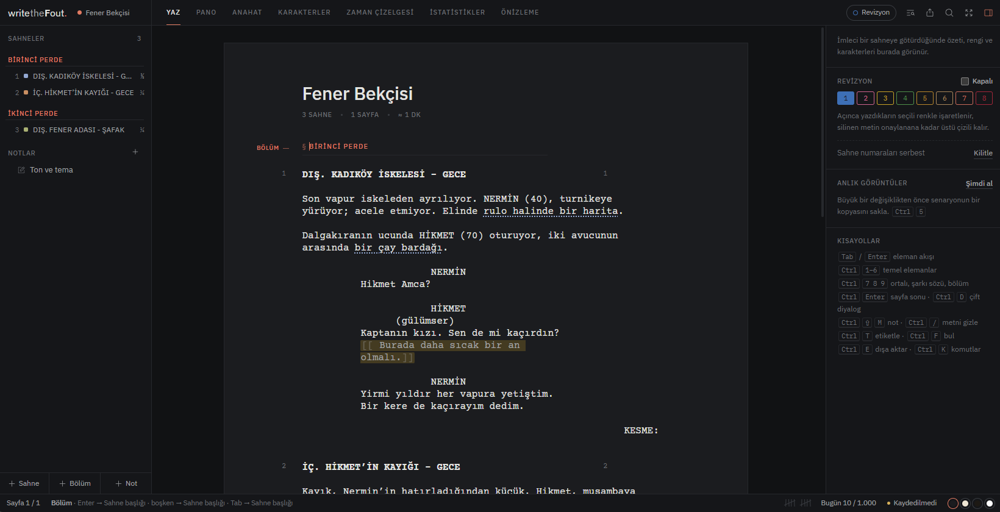
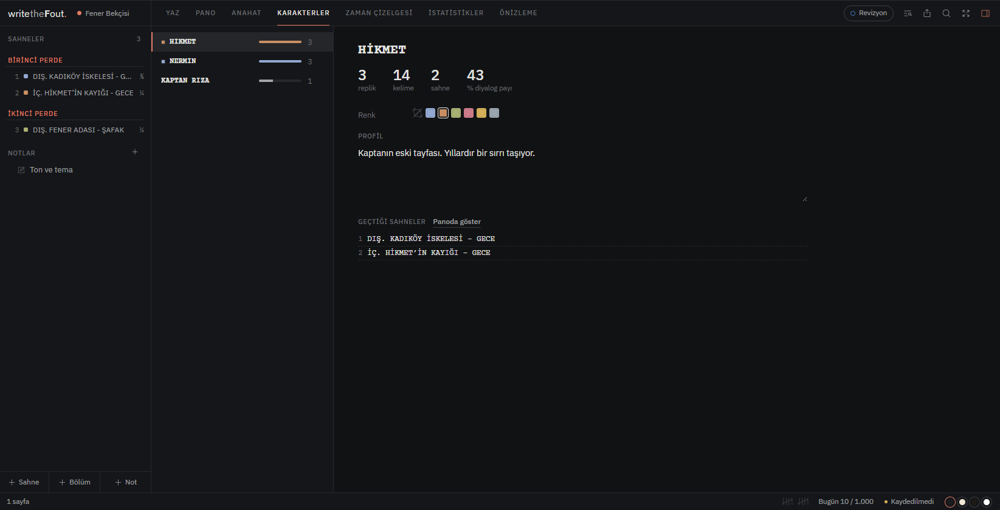
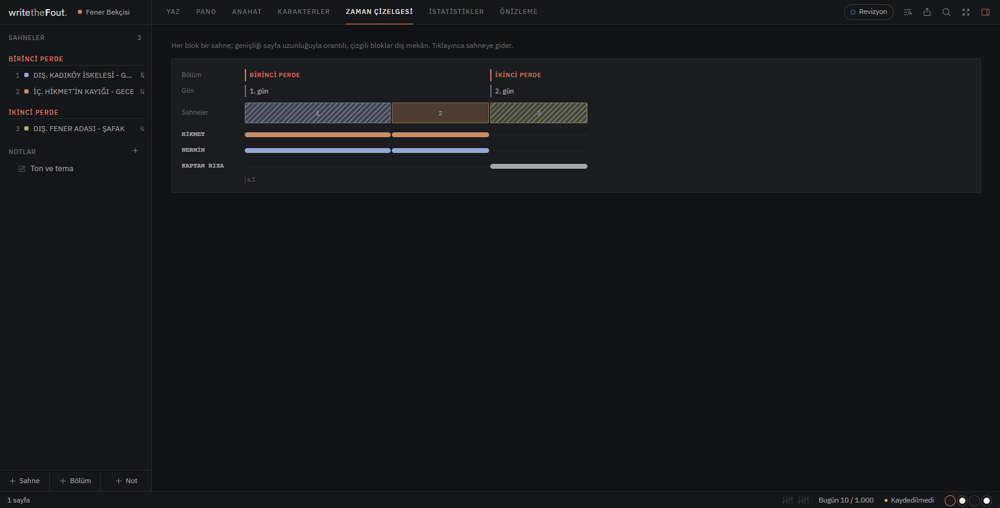
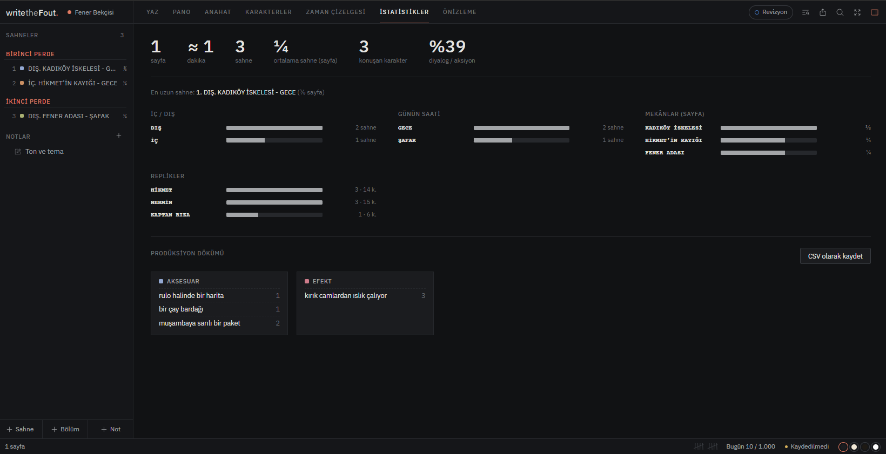
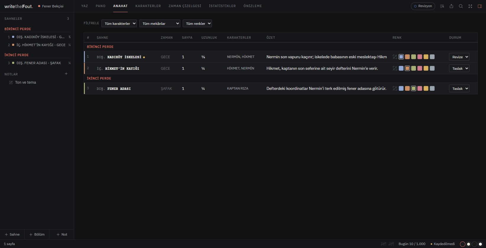

Senaryon için.Hikâyen için.
writetheFout.; sahne yazımından karakter takibine, anahattan zaman çizelgesine kadar senaryonun tamamını tek bir masaüstü çalışma alanında toplar.

Senaryonun tamamı.
Tek çalışma alanında.
Bu bir sunum maketi değil. Aşağıdaki ekranlar doğrudan writetheFout.'un içinden alınmıştır.
Yaz
Senaryonu yaz. Otomatik biçimlendirme ve klavye odaklı çalışma ile hikâyenin içinde kal.
Hikâyenin haritasını çıkar.
Sahnelerini kartlara ayır. Karakter, mekân ve renklerle filtrele. Hikâyenin akışını tek bakışta gör.

Karakterlerin de bir hikâyesi var.
Kim kaç sahnede? Kaç kelime söylüyor? Hikâyenin ne kadarında yer alıyor? Karakter ekranı bunları tek yerde toplar.

Hikâyenin zamanını kaybetme.
Sahnelerin gününü, sırasını ve karakterlerin hikâyedeki hareketini tek bir çizelgede takip et.

Senaryon hakkında daha fazlasını bil.
Sayfa, sahne, karakter, diyalog, mekân ve prodüksiyon detaylarını tek bakışta gör. İstersen veriyi CSV olarak dışa aktar.

Bütünü kaybetmeden detaya gir.
Sahnelerini tablo halinde karşılaştır; zaman, sayfa uzunluğu, karakterler, özet ve durum bilgilerini aynı yerde gör.

Senaryon kapalı bir sistemde değil.
Kendi bilgisayarında.
Hikâyen
sana ait.
Senaryonu kendi bilgisayarında tut. Çalışmanı farklı biçimlerde dışa aktar ve istediğin zaman başka araçlara taşı.
İlk sahnen
boş duruyor.
writetheFout. Windows için kullanıma hazır. Kaynak kodu açık; senaryon ise senin.
writetheFout.'u GitHub'dan indir →